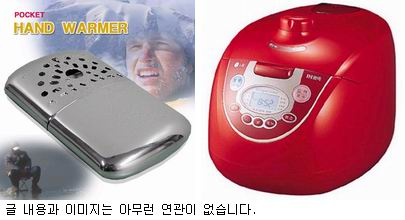

실은 얼마전에 인터넷으로 손난로를 하나 샀어.
거 왜 있잖아. 라이터 기름 넣고 불피운 담에 천 주머니 속에 넣어두는거.
포장 뜯어서 흔드는거 말구.
홈페이지에서 볼 땐 크기도 크고 번쩍번쩍 빛나 보였는데 실제로 받아보니 크기도 상당히 작고 전체적으로 울퉁불퉁 하더라구.
그래도 불이 붙으면 뜨끈뜨끈해서 주머니에 넣고 다녔는데 이게 냄새가 너무 심한거야.
오늘도 전철에서 냄새 때문에 고생좀 했거든.
출근해서도 옆자리 기획자한테 (고스톱/포커 게임 기획자인데 머리가 길어) 한참 투덜거리면서 내 PC 에 로긴했는데 옥션에서 메일이 와 있더라구.
물품 수령을 확인해달라는건데 확인을 해줘야 판매자가 돈을 받을 수 있다는군.
뭐 제대로 받긴 했으니까 확인은 해줬는데 곧장 의견을 묻는 페이지가 뜨더라고.
그래서 마침 잘 됐다 싶어 이렇게 의견을 달아줬지.
"상품이 생각보다 작고 기름 냄새가 심함. 인조섬유 양이 적음"
아래에 보니 '외부에 공개될 수 있고 수정이 불가하니 욕설/비방은 삼가해주십시오' 라는 문구가 있더라고. 어차피 욕설은 아니니까 '확인' 눌러버렸어.
10분도 안되서 생각이 나더라고.
내가 손난로를 옥션에서 산게 아니거든.
옥션에서 이것저것 사다보니 깜빡한거지.
내가 옥션에서 샀던건 말야...
전기밥솥이었어....
같이 사는 형진이랑 전기밥솥 좋다고 아주 입이 쫘악 벌어졌었는데...
판매자한테 미안해 죽겠다. 이를 어쩌냐. -_-...
사람들은 밥에서 기름 냄새가 나는줄 알꺼 아냐....
밥이 안넘어갈것 같아.
2003년도 최고의 악행으로 기억될꺼야. ㅠ.ㅜ